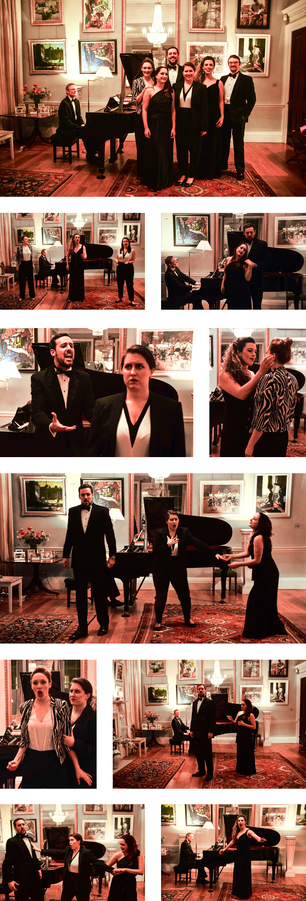
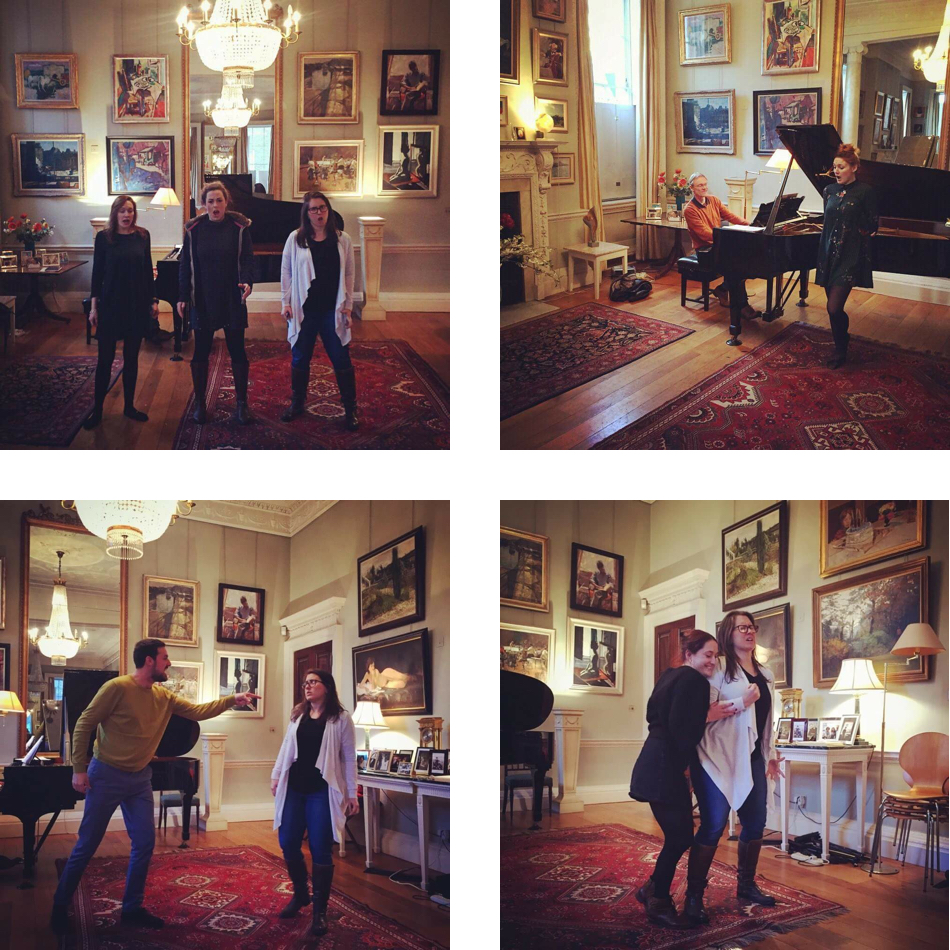

The adaptation of this opera is intended as a semi-staged collage of materials from George Frideric Handel’s great opera, ‘Alcina.’ It is a chance to enjoy the spectacular arias of this opera with theatrical staging to connect the characters, story, music and drama.
Handel draws upon the colorful characters of Ariosto’s epic poem, ‘Orlando Furioso,’ in this drama of magical deception, disguised personalities, twisted love, and passionate lust. Drama and music are woven together to develop this opera seria steeped in mythological knights and sorceress queens, all of whom are vulnerable to their raw emotions and human faults. This concert adaptation invites the enchanting music and gripping drama to bring life to the tale of Handel’s ‘Alcina.’
Join us in beautiful Southern England for a performance with the Two Moors Festival. More information to come!
Shown above: Pictures from most recent performance at the 22 Mansfield Street Concert Series in London, November 2017.
'Music at 22 Mansfield Street' London Concert Series
Location: 22 Mansfield Street, Marylebone, London W1G 9NR, UK
This performance took place as part of Bob and Elizabeth Boas' 'Music at 22 Mansfield Street' series. The concert was a fundraiser for the Two Moors Festival, in aid of the John Adie Memorial Trust.
Concert Testimonials:
"How did they do it? Six talented young singers and pianist Harvey Davies managed to pack a punch in the drawing room at 22 Mansfield Street, singing their guts out and showing off their acting skills to bring us a condensed version of Handel’s Opera Alcina. Never heard to it? Neither had I, but anything Bob and Elisabeth Boas put on at their wonderful Mayfair home is of such a high standard that I rarely read the label and just turn up. I may not always care for the composer’s work, but that’s the risk I take.
I was not disappointed by Alcina. It simply zinged along: I loved the music - easy on the ear - and the whole experience: singers easy on the eye, with women dressed as men giving an added piquancy. With six characters, it was way more complicated than the standard love triangle. Programme notes would have helped with this. Though we we were given a summary of the scene to come by Harvey Davies it would have been useful to check who was in love with whom with a quick glance at something written.
They used the space so well, and provided such an intimate performance, that I could almost see this ‘Opera’ performed in my own home! The thought would never have crossed my mind before. In any case I’m sure many of the smaller music festivals would have a hit with this one. Ultimately it left me feeling glad to be alive, which is the highest praise I can give."
— Rachel Fay, Professional Introducer at Parties & Business Events
Shown above: Performance rehersals at the Two Moors Festival in London, November 2017.
Royal Northern College of Music Alumni Concert
Location: Concert Hall, Royal Northern College of Music, Manchester United Kingdom
In it's first inception, this concert was developed as an Alumni concert at the Royal Northern College of Music to feature singers from the graduate class of 2014. The concert was produced and developed by Chase Henry Hopkins, with cast representing the international talent of the RNCM: Bryony Williams (soprano), Heather Lowe (mezzo), Elizabeth Humhpries (mezzo) Benjamin Kevin Lewis (baritone), Chase Henry Hopkins (tenor), and Joanna Norman (soprano).
Concert Testimonials:
"One distinction of presenting opera in this format is the absolute necessity of the participants being good actors. This was certainly the case here."
— Robert J Farr, Seen and Heard International
For further information, ticket information, or general enquiries, please email us at HandelsAlcina@gmail.com.